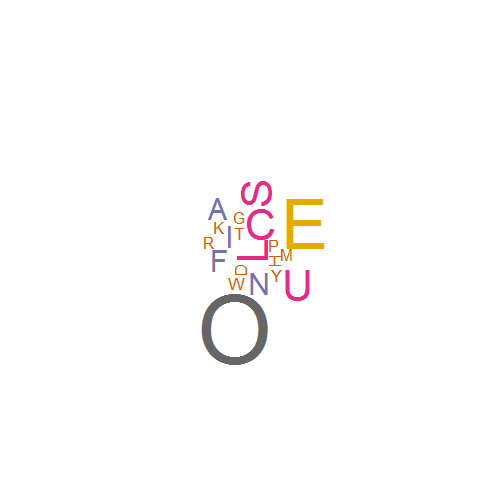

- Most of us know what words are our favorite
- good
- chocolate
- love
- owesome
- And we know letters form words
- But our favorite letters are hidden somewhere in our brain.
- Let's find them out with this app!
Zhao Hao
Online Physicist
Give me a list of words that you like:
For example:
favorite.words <- c("Good", "Luck", "Owesome", "Serious", "Play", "Fun", "Fine", "Chocolate")
Then, type them out:
paste(favorite.words, collapse = " ")
## [1] "Good Luck Owesome Serious Play Fun Fine Chocolate"
You then give the sentence to the Letter Cloud app.
It first chops the words into letters:
unlist(strsplit(toupper(favorite.words), NULL))
## [1] "G" "O" "O" "D" "L" "U" "C" "K" "O" "W" "E" "S" "O" "M" "E" "S" "E"
## [18] "R" "I" "O" "U" "S" "P" "L" "A" "Y" "F" "U" "N" "F" "I" "N" "E" "C"
## [35] "H" "O" "C" "O" "L" "A" "T" "E"
Then create a frequency table from the letters:
##
## A C D E F G H I K L M N O P R S T U W Y
## 2 3 1 5 2 1 1 2 1 3 1 2 7 1 1 3 1 3 1 1
Finally, the letters are sorted and filtered:
## O E C L S U A F I N D G H K M P R T W Y
## 7 5 3 3 3 3 2 2 2 2 1 1 1 1 1 1 1 1 1 1
Now we know what your favorite letters are. In this example, it is "O".
Here is a letter cloud map. Is this your brain of letters?
Visit https://prizmworkshop.shinyapps.io/WordCount/ for details!
